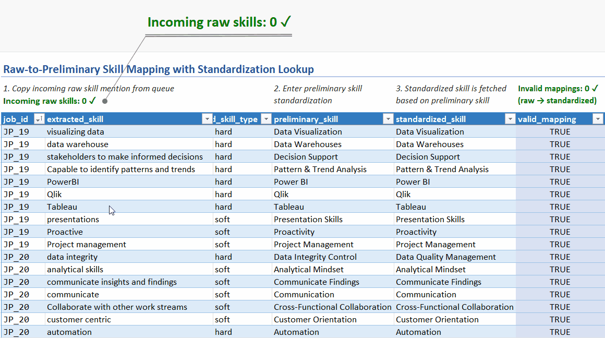
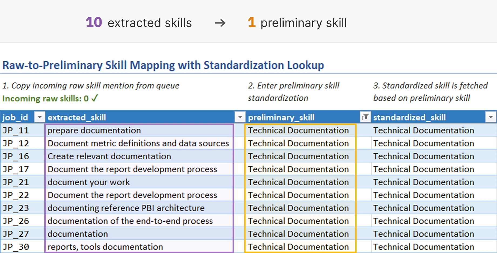
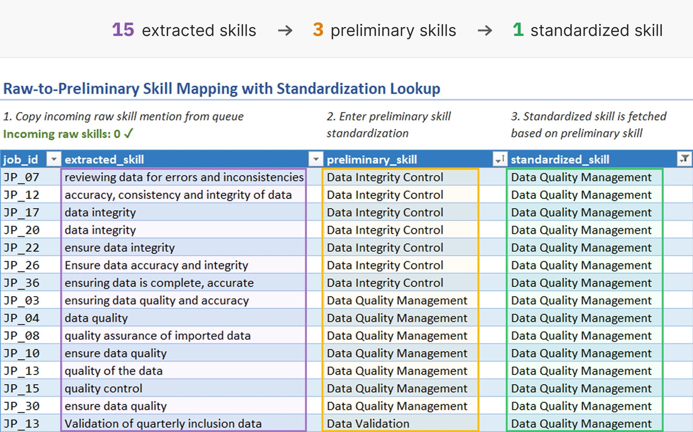
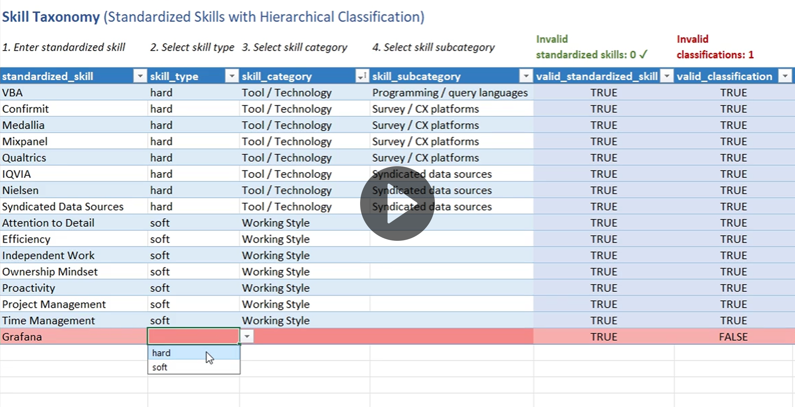
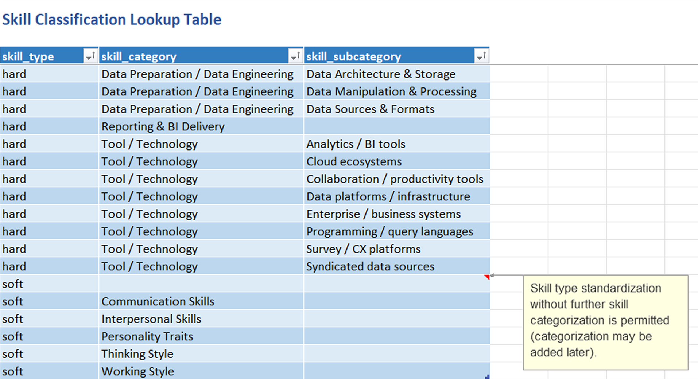
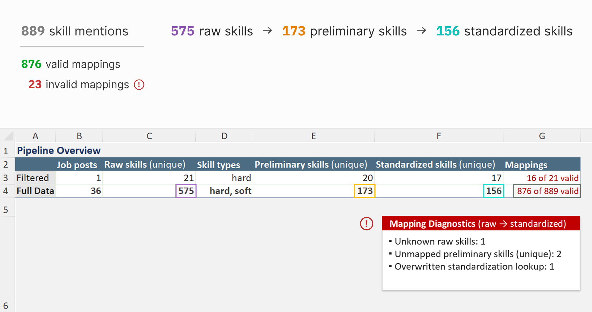
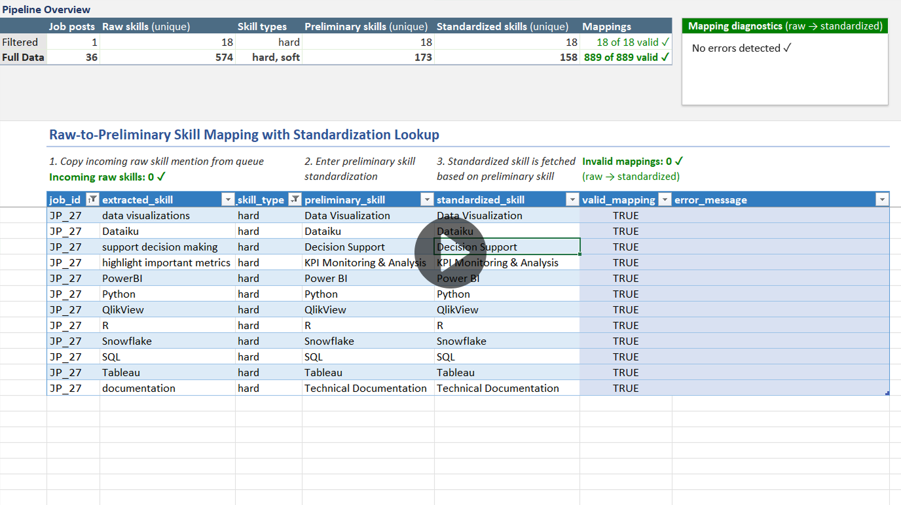

Skill Standardization Pipeline
Taxonomy-driven standardization pipeline built in Excel for dimensional skill demand analysis.
Taxonomy-driven standardization pipeline built in Excel for dimensional skill demand analysis.

Skill requirements across job postings are expressed in highly variable surface forms.
Differences in formatting (e.g., “Power BI” vs “PowerBI”) or phrasing (e.g., “multi-tasking” vs “handling multiple tasks concurrently”) fragment conceptually identical skills into multiple surface-level variants. These variations cause misleading frequency counts and unreliable aggregations.
As a result, raw skill mentions cannot be used directly for structured skill demand analysis without a prior standardization process.
In addition, the absence of a controlled taxonomy prevents the consistent grouping of skills into analytical categories and limits dimensional analysis potential.
To address these issues, I designed a taxonomy-driven standardization system for downstream analytical use that transforms raw skill mentions into standardized skills enriched with hierarchical skill classification.
This project implements a skill standardization pipeline in Excel that transforms raw skill mentions into standardized skills through a two-stage mapping workflow.
For each raw extracted_skill, the user first enters a preliminary
standardization. Then, for each unique preliminary_skill, the user selects a
standardized_skill from a controlled skill taxonomy. The taxonomy can be
expanded as needed with additional standardized skills classified by their skill type (hard
or soft), category, and subcategory.
The final standardized skill is fetched automatically via the preliminary mapping layer, which helps prevent inconsistent mappings and enables systematic updates.
To further support consistent standardization, the pipeline combines mapping tables, validation frameworks, diagnostic dashboards, and queue-based workflows while maintaining full traceability from raw skill mentions to final analytical outputs.
Core Features
Key Technologies
Dataset Metrics
The pipeline documentation is organized into the following sections:
The skill standardization pipeline imports a single CSV file that contains raw skill mentions extracted from job postings.
The imported CSV dataset is the output of a Python script that extracts highlighted skill mentions from annotated job posting excerpts.
The script processes structured Word documents with job posting metadata and posting excerpts with highlighted skill mentions, where highlight color encodes the observed skill type (hard or soft).
Extracted skill mentions are written to a CSV file with the fields: job_id,
extracted_skill, observed_skill_type, where each row
represents a single observed skill occurrence.

Each raw skill mention is defined by the following fields:
job_id: unique job posting identifier
extracted_skill: exact skill phrase used
observed_skill_type: skill type observed during annotation (hard or
soft). Used for preliminary grouping and filtering. Final classification is determined by
the skill_type taxonomy field. This separates initial observations from authoritative classification
decisions.

A refresh-based queue is used to detect raw skill mentions that have not yet entered the raw-to-preliminary mapping table.
An incoming raw skill is any row of the imported dataset that is not present in the raw-to-preliminary mapping table.
Incoming raw skills can occur in two situations:
The queue is implemented in Power Query via a left anti join on the raw skill mentions
dataset and the raw-to-preliminary mapping table. The join uses a composite key of
job_id, extracted_skill, and observed_skill_type,
reflecting the raw skill mention schema defined by the input dataset.

The refresh-based queue design introduces two operational limitations, which are addressed by a real-time queue status indicator located above the mapping table:
Pipeline progress monitoring.
Since the queue and corresponding mapping table are located on separate sheets, monitoring mapping completeness requires manual sheet navigation.
The queue status indicator displays the count of unmapped raw skills directly above the mapping table, to quantify standardization progress.
Instant validation feedback.
If an already mapped raw skill is modified within the mapping table, the queue does not include the affected raw skill mention until the next refresh, causing a temporary discrepancy between perceived and true mapping completeness.
The queue status indicator provides instant feedback if an already mapped raw skill is modified and no longer matches the source data.

The queue status indicator is implemented as a dynamic formula that filters the imported raw skill mentions dataset for rows without a match in the raw-to-preliminary mapping table. The formula counts the filtered rows and outputs the number of incoming raw skills above the mapping table.
The first phase of skill standardization takes place in the raw-to-preliminary mapping table.
For each imported raw skill mention, the user enters a preliminary standardization, e.g.:
This phase aims to eliminate surface-level variation across skill mentions, serving as an initial vocabulary normalization layer.
Since preliminary skills are meant to stay close to the original phrasing, they retain semantic granularity. The second standardization phase then consolidates synonymous preliminary skills, producing a more analytically meaningful final dataset.
The mapping workflow starts by copying incoming raw skill mentions from the queue into the mapping table. This human-in-the-loop workflow helps prevent accidental overwrites that may result from automatic row insertion.
All original job_id, extracted_skill, and
observed_skill_type values get copied into the mapping table. As a result,
each skill mapping contains a complete source record and maintains a traceable data
lineage.
Once a raw skill mention is copied into the mapping table, the user enters a
preliminary_skill. The goal is to identify the core competency within the
extracted phrase, while preserving contextual nuance.

The resulting preliminary skills are later used in the second mapping phase, where
each unique preliminary_skill is assigned a taxonomy-aligned
standardized_skill.
The raw-to-preliminary mapping table automatically fetches the final standardizations using XLOOKUP against the preliminary-to-standardized mapping table.
This lookup architecture achieves:
Centralized standardization logic. A unique preliminary skill is standardized only once, and the standardization applies to every instance of the preliminary skill.
Mapping drift prevention. The final standardized skill is derived rather than manually entered, which protects against inconsistent preliminary → standardized mappings.
Full pipeline visibility. The lookup keeps the full raw → preliminary → standardized skill transformation visible from a single table.
The mapping table contains two validation columns, producing row-level data integrity metadata:
valid_mapping: contains Boolean flags indicating mapping success
or failure
error_message: displays the exact issue(s) causing a mapping failure
| Validation error | Trigger condition |
|---|---|
| Unknown raw skill | Given job_id, extracted_skill,
observed_skill_type combination not found in imported dataset |
| Duplicate raw skill | Multiple mappings exist for same raw skill |
| Empty preliminary skill | Preliminary skill field is blank (no preliminary standardization entered yet) |
| Unmapped preliminary skill | Preliminary skill is not mapped to a standardized skill in the second-stage mapping table |
| Overwritten standardization lookup formula | Standardized skill lookup formula was manually deleted or modified. Note:
Invalid standardized skills cannot enter the table while the lookup formula
is intact, since the lookup returns only mappings where
valid_mapping = TRUE.
|
The mapping integrity validation is implemented as follows:
A dynamic formula-based queue surfaces preliminary skills that have not yet entered the preliminary-to-standardized mapping table.
A pending preliminary skill is a preliminary_skill in the raw-to-preliminary mapping table that is not present in the preliminary-to-standardized mapping table.
This occurs when a raw skill mention is sufficiently different from other raw skills to require a new preliminary skill standardization.

The queue is implemented as a dynamic array formula using FILTER on the raw-to-preliminary
mapping table for non-empty preliminary_skill values that have no match in the
preliminary-to-standardized mapping table.
When pending preliminary skills are present, the formula displays them as a sorted, unique list. Alternatively, the formula returns “(none)” to signal an empty queue state.
The queue is located on the same worksheet as the preliminary-to-standardized mapping table, to support standardization progress monitoring. As preliminary skills are added from the queue into the mapping table, the queue provides instant feedback by shrinking in size and updating its counter.
The second phase of the standardization pipeline takes place in the preliminary-to-standardized skill mapping table.
For each unique preliminary skill entered in the first stage, the user selects a taxonomy-aligned final standardization in the second stage. Selection is performed through a validated drop-down interface populated from a controlled skill taxonomy.
This mapping architecture achieves:
Final dataset consistency. The selection-based design ensures that only preapproved standardized skills enter the final dataset, as opposed to allowing ad-hoc standardization.
Consolidation of synonymous skills. Multiple preliminary skills can map to a single standardized skill, which helps create a more analytically meaningful final dataset.
Centralized and propagated updates. Updating a final standardization only requires changing a single row in the preliminary-to-standardized mapping table. The updated standardized skill is then automatically propagated to all related raw skill mentions through the preliminary mapping layer.

The workflow begins by copying pending preliminary skills from the queue into the mapping
table. Then, for each preliminary_skill, the user selects a
standardized_skill from a drop-down interface.
There are two possible workflows:
Select preexisting standardized skill.
This happens when a preliminary skill is synonymous with an already existing standardized skill and introducing a separate standardization would risk fragmenting the final dataset.
Expand skill taxonomy prior to selection.
This occurs when a preliminary skill corresponds to a tool, technology, or competence that is not yet present in the skill taxonomy.
In this case, the user first expands the taxonomy with the new standardized skill and its classification (at least the skill type: hard or soft). The new entry is automatically added to the mapping table’s drop-down menu, which the user can now select.

The mapping table contains two validation columns, producing row-level data integrity metadata:
valid_mapping: contains Boolean flags indicating mapping success
or failure
error_message: displays the exact issue(s) causing a mapping failure
| Validation error | Trigger condition |
|---|---|
| Empty preliminary skill | Preliminary skill field is blank |
| Unknown preliminary skill | Preliminary skill does not exist in the raw-to-preliminary mapping table |
| Duplicate preliminary skill | Multiple mappings exist for same preliminary skill (uniqueness is compared across cleaned entries) |
| Empty standardized skill | Standardized skill field is blank |
| Invalid standardized skill | Standardized skill either does not exist or has a taxonomy-level error (duplicate skill or invalid classification) |
The mapping integrity validation is implemented as follows:
The skill taxonomy is where standardized and hierarchically classified skills are entered and curated.
Each row of the skill taxonomy table represents a unique standardized skill, classified by skill type (hard or soft), skill category, and subcategory. These entries form the authoritative list of standardized skills that the imported raw skill mentions can ultimately be mapped into.
The taxonomy serves three primary functions within the standardization pipeline:
Standardization governance. Only taxonomy-approved skills can enter the final standardized dataset.
Consolidation of skill variants. Standardized entries reduce surface-level variation between raw skill mentions, ensuring reliable aggregations and enabling normalized analysis of skill demand across job postings.
Analytical classification. Each standardized skill is enriched with classification metadata that supports dimensional analysis across skill types, categories, and subcategories.
As new job postings are processed upstream, the standardization pipeline receives additional raw skill mentions.
When a job posting phrase corresponds to a tool, technology, or competence not yet present in the skill taxonomy, the taxonomy must be expanded with a new standardized skill before the raw skill mention can receive a final standardization.
The taxonomy can be expanded in two steps:
Enter standardized skill. The user creates a new taxonomy entry representing the tool, technology, or competence that requires standardization.
Select skill classification. The user performs a step-by-step selection of skill type (hard or soft) → skill category → skill subcategory. Only pre-approved classifications are permitted, implemented via a cascading drop-down validation system.
If the new taxonomy entry is valid – as determined by the valid_standardized_skill
and valid_classification fields – it becomes automatically available in the
second-stage mapping table as a final standardization option.

Pre-approved skill classifications – unique skill type, category, and subcategory combinations – are curated in a dedicated lookup table.
This table directly impacts downstream skill demand analysis since it defines the analytical categories that related skills are grouped by.

A skill type selection (hard or soft) filters the available skill categories, while the selected category limits the available skill subcategory options.
This protects against erroneous categorizations such as Soft skill → Interpersonal skills → Statistical methods.
The cascading drop-down validation is implemented using hidden helper sheets
that dynamically generate the possible skill category and subcategory options for each
taxonomy row. The category_validation sheet filters the classification lookup
table according to the selected skill type, while the subcategory_validation
sheet filters available subcategories based on the selected skill category.
The skill taxonomy table contains three validation columns, producing row-level data integrity metadata:
valid_standardized_skill: contains Boolean flags indicating
standardized skill validity.
valid_classification: contains Boolean flags indicating
skill classification validity. Requires a valid standardized skill as a
classification target.
error_message: displays the exact issue(s) associated with a
taxonomy entry.
| Validation error | Trigger condition |
|---|---|
| Empty standardized skill | Standardized skill field is blank |
| Duplicate standardized skill | Standardized skill is entered more than once (uniqueness is compared across cleaned entries) |
| Empty skill classification | All classification fields (skill type, category, subcategory) are blank |
| Invalid skill classification | The given skill type, category, and subcategory combination does not exist in the classification lookup table |
The taxonomy integrity validation is implemented as follows:
A monitoring dashboard consisting of two panels – Pipeline Overview and Mapping Diagnostics – is positioned above the raw-to-preliminary mapping table to provide visibility into pipeline scale, transformation outcomes, and data quality.

Measures pipeline scale. Total imported skill mentions and job postings processed.
Quantifies skill consolidation. Raw → preliminary → standardized skill counts.
Monitors mapping validity. Valid versus total skill mappings.
Supports filtered analysis. Comparison of filtered and full dataset metrics.
The filtered context metric generation is implemented as follows:
Aggregates validation errors by type:
Summarizes remaining mapping work. Number of raw skills missing preliminary standardization, and number of unique preliminary skills requiring final standardization.

The mapping diagnostics panel is implemented as follows:
The skill standardization pipeline concludes in a standardized analytical dataset that transforms unstructured skill mentions into validated, taxonomy-classified records, suitable for downstream analysis and visualization.
Each row of the final dataset represents a single imported raw skill mention enriched with its final standardization and classification, defined by the following fields:
job_id: Unique job posting identifier
extracted_skill: Exact skill phrase extracted from the original job posting
standardized_skill: Standardized skill phrase
skill_type: Standardized skill type (hard or soft)
skill_category: Main skill category
skill_subcategory: Skill subcategory
The output dataset is implemented in Power Query via a left outer join between:
using the shared standardized_skill field as the join key.
To ensure analytical integrity, validation fields are used to exclude invalid records from the final dataset. In order to be used for analysis, each record must satisfy the following requirements:
valid_mapping = TRUE
valid_standardized_skill = TRUE
valid_classification = TRUE
The final dataset powers an interactive dashboard that enables multidimensional exploration of skill demand across the analyzed job postings.
Analytical capabilities include:
{kind=link}
{kind=link}
{kind=link}